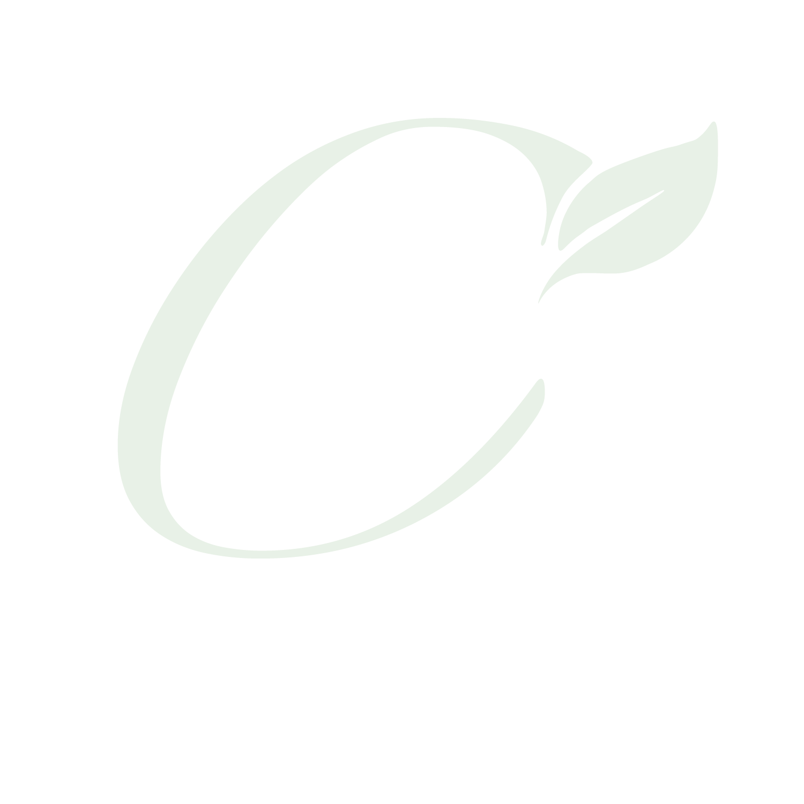
What if rare ingredients
could grow at home?
How might we design an end-to-end growing system that helps users cultivate rare, high-value ingredients at home through an automated experience?

How might we design an end-to-end growing system that helps users cultivate rare, high-value ingredients at home through an automated experience?
Many rare or high-value ingredients are either difficult to find or sold at premium prices, limiting people’s ability to explore different kinds of cooking. Growing food at home is increasingly popular, but existing systems require time, space, and expertise that most apartment dwellers don’t have.
“I don’t have time to maintain plants every day.”
Survey respondent — college student“I want to grow things I actually use in cooking.”
Survey respondent — college student
Research summary — problem framing and user insights
A horizontal hydroponic growing system with 4 individual plant pods and 2 enclosed mushroom pods, all on a 54″ powder-coated aluminium frame. LED lighting, water circulation, and nutrient delivery are automated. The polycarbonate panels keep the interior clean and the growing environment controlled, reducing maintenance to an occasional top-up.
Kratky passive hydroponics
Roots sit above a nutrient-rich water reservoir. As the plant grows, the water level drops, creating a natural air gap. No pumps or timers required for the plant pots.
35W integrated LED
A full-spectrum LED bar under the top panel provides consistent artificial daylight. Controlled through the app, it runs on a timed cycle without user input.
App-guided picking
The app tracks each plant’s growth cycle and notifies when it’s ready to harvest. An integrated ruler on the frame provides a quick visual reference.
Recipe suggestions follow
After logging a harvest, the app surfaces contextual recipes that use the exact ingredient just picked — closing the loop between growing and cooking.
Each crop was selected for being either hard to find in regular stores, sold at premium prices, or both. The system grows what actually changes what’s on the plate.

Concept rendering showing selected crops
18 college students were surveyed. As low-to-middle income individuals balancing busy schedules and small apartments, they reflected the real barriers to home growing. The findings reframed the problem entirely — away from food insecurity, toward food quality and access to ingredients that actually matter in the kitchen.
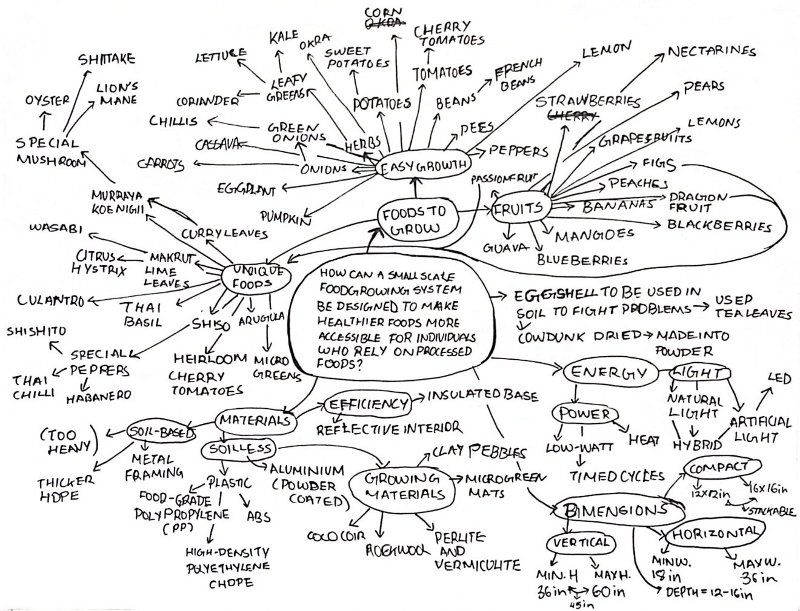
Initial research mind map — foods to grow, materials, dimensions, farming methods
Three layout directions were explored: vertical, horizontal, and compact/stackable. Vertical maximised plant density but required height that doesn’t fit apartments. Compact/stackable added complexity users would abandon. Horizontal — low, surface-based, accessible — won. It looks like furniture, not farm equipment.
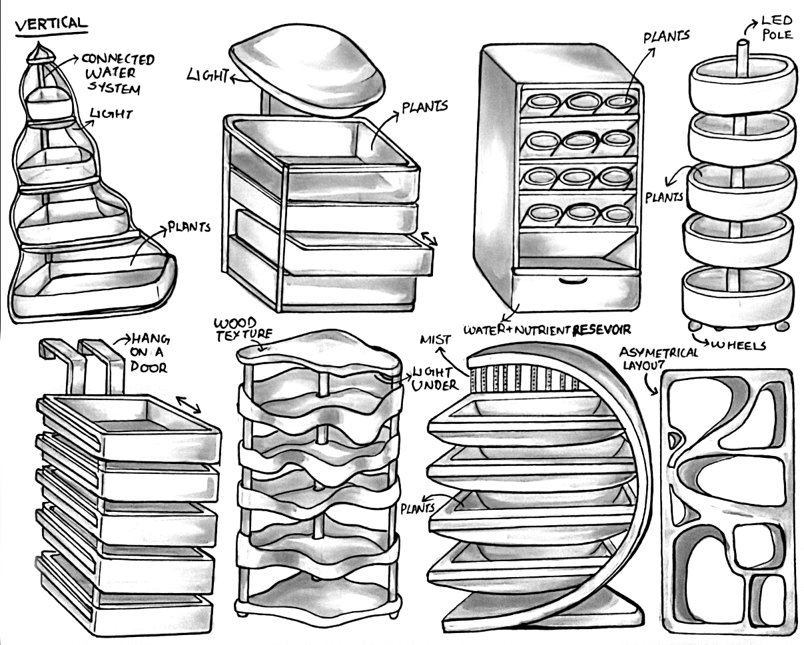
Vertical concepts — height became the deal-breaker
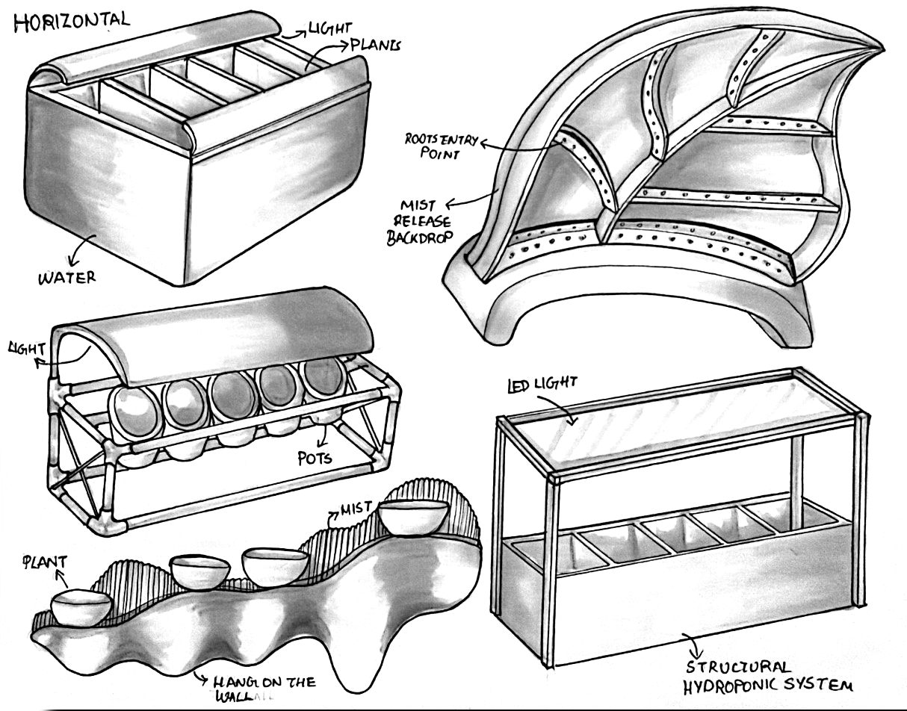
Horizontal concepts — selected direction
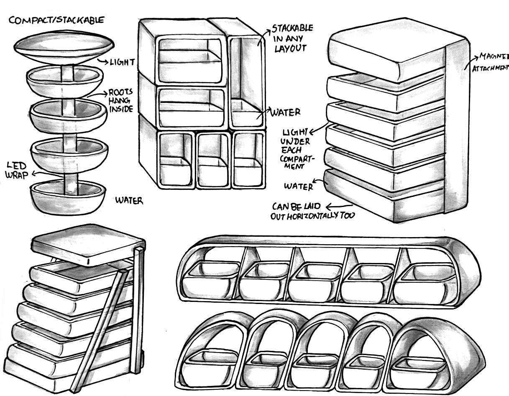
Compact/stackable — flexible but too complex
Different plants need radically different environments. Thai basil, specialty peppers, and heirloom tomatoes grow under one set of conditions. Lion’s mane and pink oyster mushrooms need high humidity, lower light, and controlled airflow — the opposite of everything else.
Solution: a separate, enclosed mushroom pod at the base of the system. Each environment is independently optimised. Neither crop is compromised.
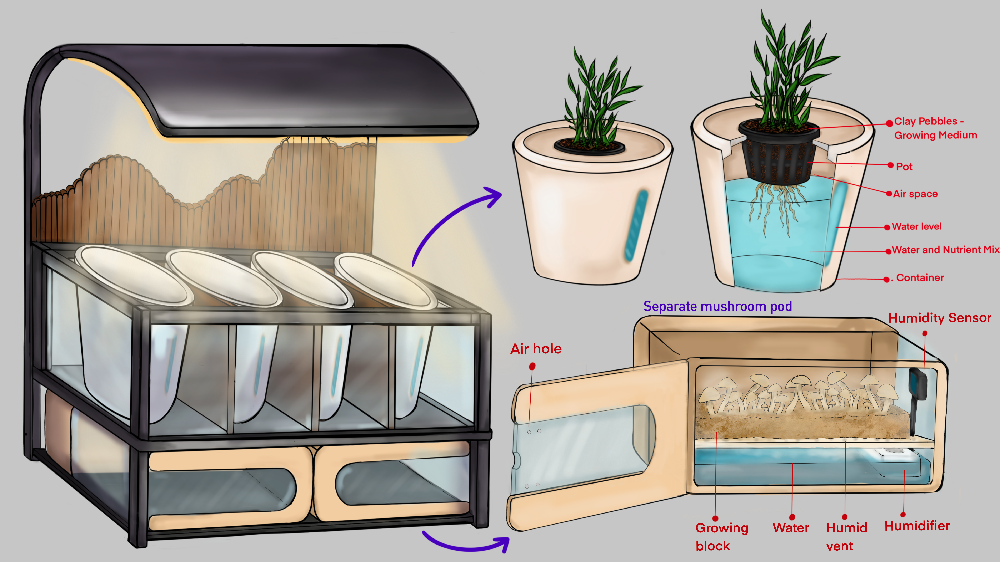
Refined concept — modular pods + separate mushroom chamber
The design evolved across four expert check-ins, two CAD iterations, full-scale spatial testing, and a 1:4 scale 3D-printed prototype. Every decision was grounded in one question: does this make the system easier to live with?

CAD iteration 1 — first digital model, however there was issues with open structure allowing dirt ingress

CAD iteration 2 — enclosed polycarbonate panels added, though additional features were needed for water protection and measurement.
A full-scale mockup was taped directly onto a wall to test how the system fits in a real apartment environment. An average-sized user (5′10″) tested standing, sitting, and reaching to harvest. This confirmed 54″ as the right height — comfortable reach without back strain, low enough to feel like furniture rather than a machine.
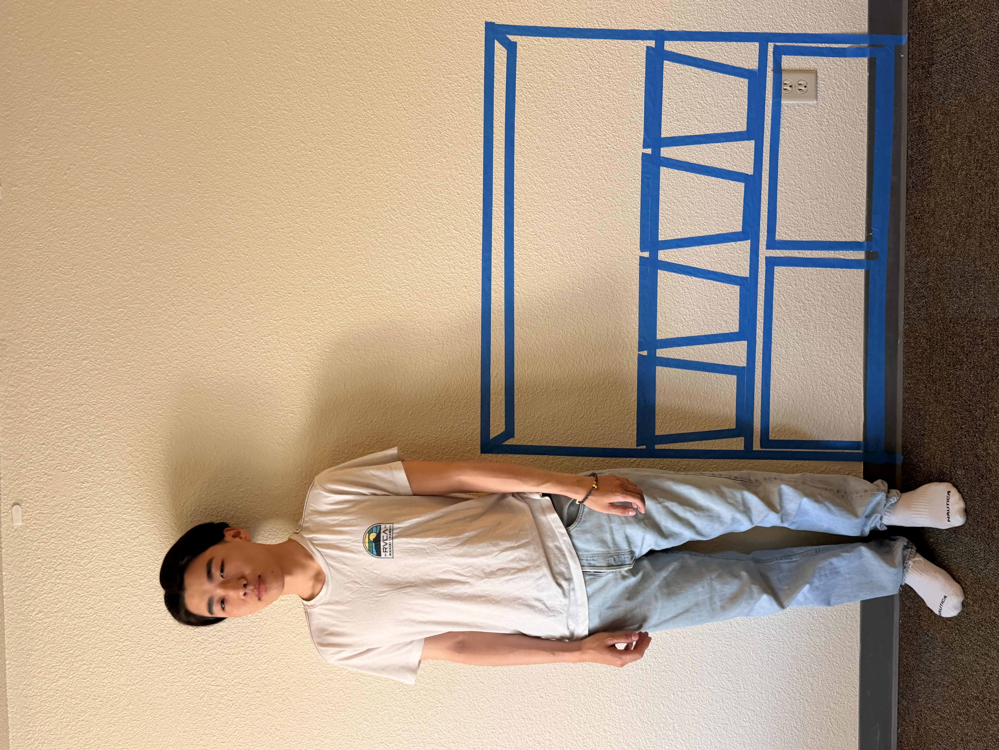
Standing — comfortable reach confirmed
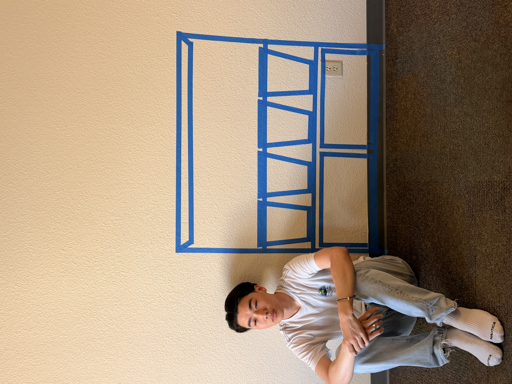
Sitting — no forward lean required
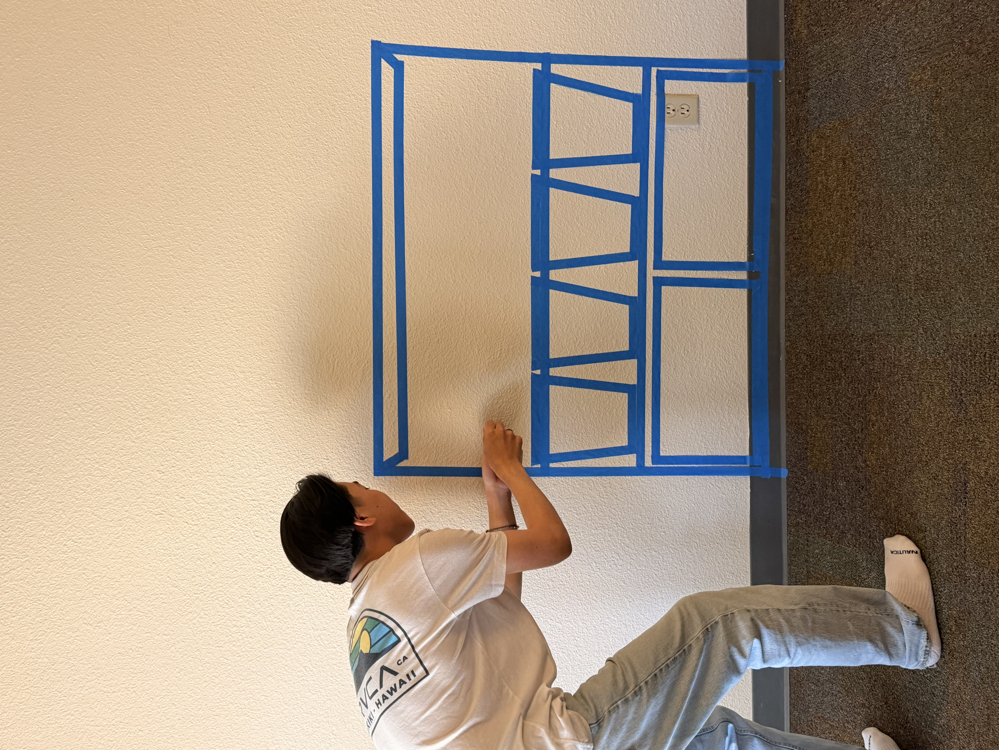
Harvesting — natural reach, no strain
A 1:4 scale prototype was 3D-printed to evaluate proportions, spacing between pods, and component assembly. It validated the structural logic and revealed that clear polycarbonate panels were critical — the open version felt unfinished and let in debris. Due to unavailability of clear PLA filament at the time, the outside panels were not printed in the prototype.

LED canopy clearance and depth proportions evaluated from this angle.

Pots removed to test how easily components slot in and out. Pod spacing and upper tray clearance were refined based on this.
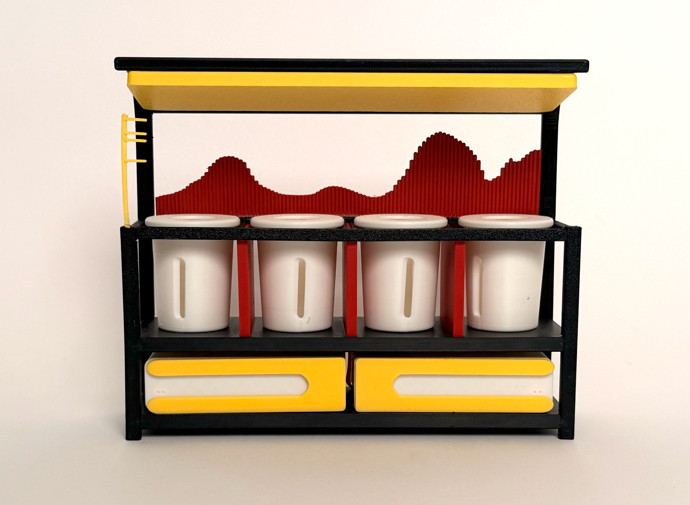

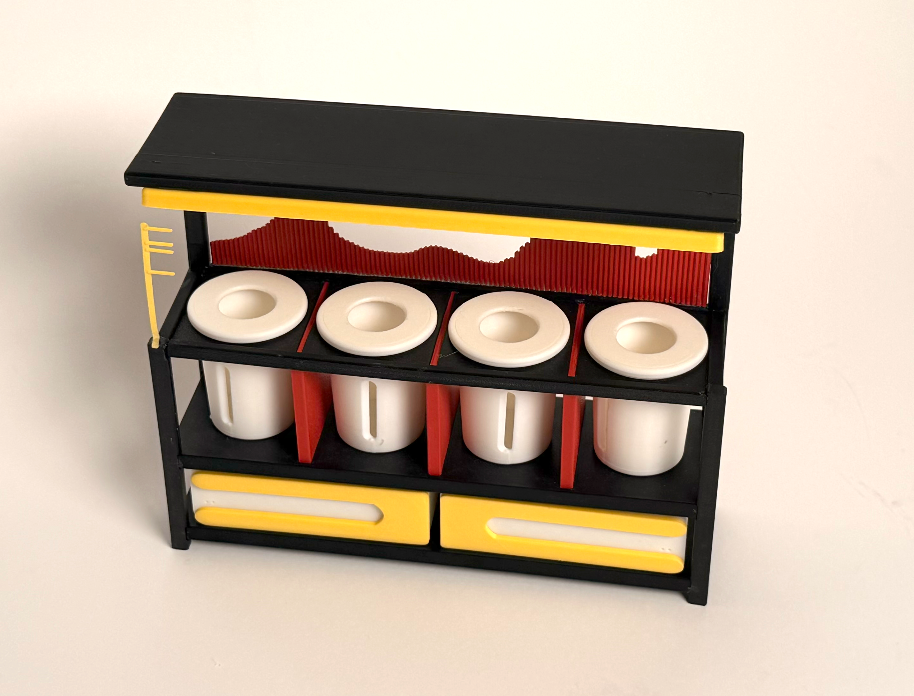
1:4 scale prototype — front view, assembled, and pot collar detail
Cultivar was designed to integrate into any living space without announcing itself. The dark powder-coated aluminium frame, warm wood reed backdrop, and white HDPE pods read as considered objects — something that belongs in a kitchen or living room, not a greenhouse.
Cultivar in a living room environment
Right
Back

Front
Left
Exploded view — all materials and components labelled
Structural frame. Lightweight, durable, and moisture-resistant for a hydroponic environment.
Plant pots and mushroom pod drawers. Food-safe, blocks light to prevent algae growth in the water reservoir.
Side and front enclosure. Transparent for visibility, impact-resistant, and easier to wipe clean than glass.
The scalloped wood reed panel diffuses light upward and adds warmth that prevents the system from feeling clinical.

Individual components — HDPE hydroponic pot and mushroom pod drawer

Pots close up
Growing rare ingredients requires knowledge most users don’t have. The companion app removes that barrier entirely — translating what’s happening inside the system into plain language, and connecting each harvest to a recipe. The goal: users are only prompted when something actually needs their attention.
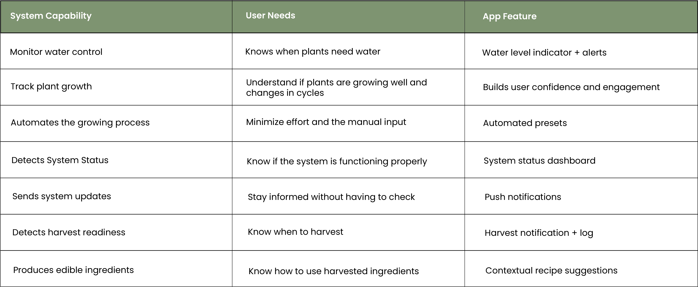
Feature mapping — system capability → user need → app feature
The app is organised around what users actually need to do: check the system, track their harvest, manage tasks, find recipes, and adjust settings. History and harvest logging are nested within their parent sections to reduce top-level clutter.

Information architecture — Home, Harvest, Tasks, Recipes, Profile

User flow — home → tasks → harvest log → recipes
Hand sketches explored layout directions and interaction patterns across all five screens. Selected elements (highlighted in red in the annotated wireframes) were carried forward based on how clearly they organised information and guided users through tasks. This process resolved structure before any visual design work began.
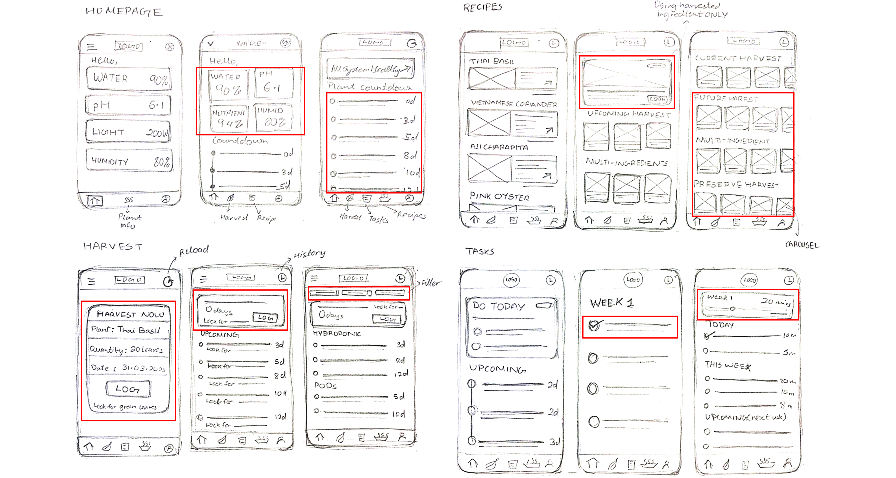
Initial wireframe sketches — homepage, harvest, tasks, recipes

Low-fi digital wireframes
3 moderated think-aloud tests with the mid-fidelity prototype revealed two core issues.
No icon labels in the bottom navigation bar. Users had to guess what each icon represented — the harvest icon and history icon were visually similar enough to cause consistent confusion in all three tests.
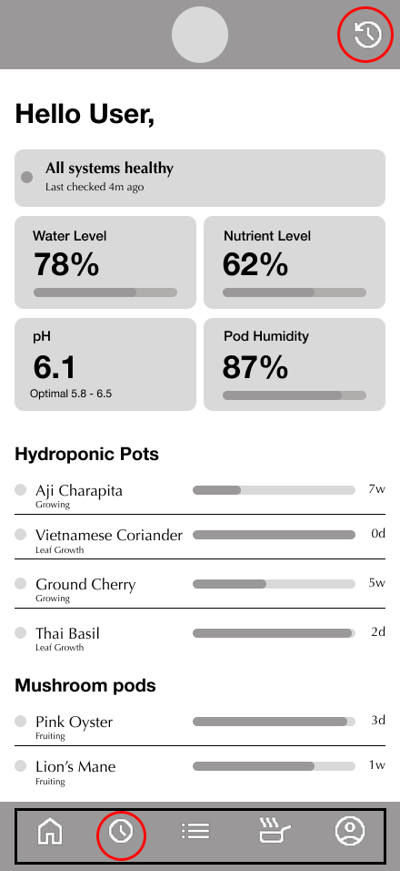
Labels added to all navigation icons. Harvest icon redesigned to a plant/leaf motif, clearly distinguishing it from the clock-based history icon. Navigation confidence improved across all users.

4 unmoderated tests with the high-fidelity prototype found one persistent pain point.
Single-page task list showing every task from today through the coming weeks in one scrollable view. Users felt that the visual weight of the list triggered anxiety rather than clarity.
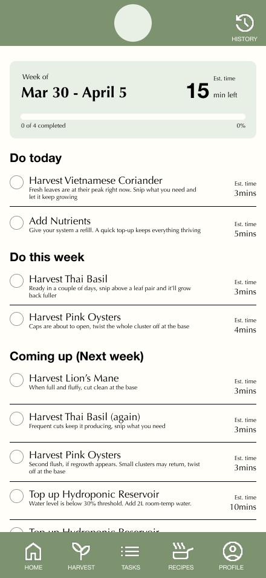
Filter tabs — Today, This Week, Next Week, and No Action Yet — break the task list into digestible views. Users can focus on what actually needs attention now and ignore everything else until it becomes relevant.

The visual language was built around the idea that Cultivar should feel calming and close to nature.


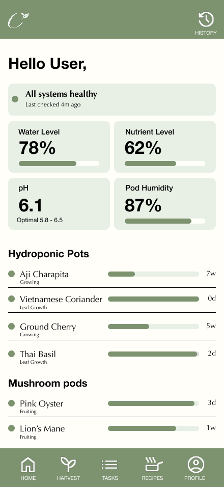


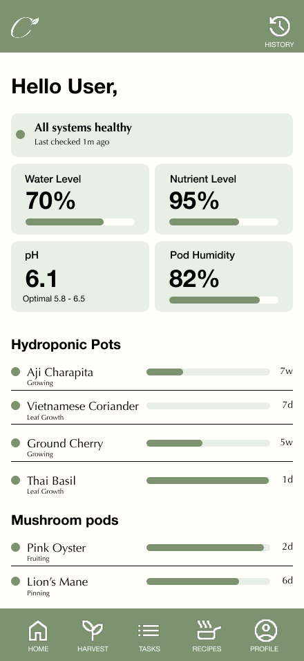
These were introduced to reduce uncertainty and minimize the need for constant user involvement.

System Down

No Tasks

Nothing to Harvest

Harvest Logged
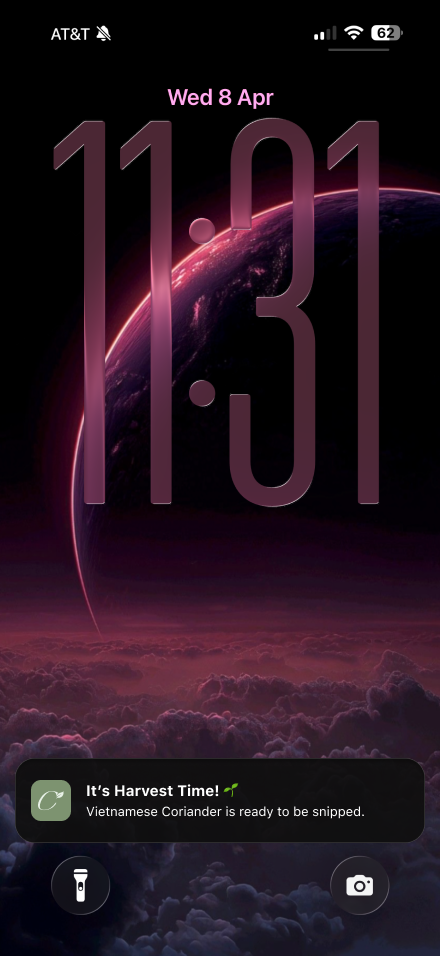
Harvest Notification
Shifting to “food quality” opened up a real user: the food-curious person in a small apartment who wants to cook with better ingredients.
A screen can be updated after launch. A physical form cannot. Every material choice, structural decision, and dimension felt more consequential than any UI choice.
Enclosure wasn’t a nice-to-have — it was a retention mechanism. The design has to respect the real constraints of people’s lives.
The hardware grows the food. The app makes it usable. Designing both as a single connected system changed how I thought about the boundaries of a “product.”
Making Cultivar look like furniture instead of farm equipment was the difference between adoption and abandonment. How a product looks in a home determines whether it stays there.
Taping a full-scale mockup to a wall to test ergonomics before building anything was one of the most useful things I did. It caught a height problem early.